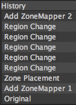

Nella scheda della Cronologia viene mostrata la cronologia completa di tutte le modifiche apportate alla foto dall'inizio della sessione di modifica corrente.
È anche possibile selezionare una modifica per tornare indietro nella cronologia. Ciò equivale a selezionare più volte Modifica > Annulla.